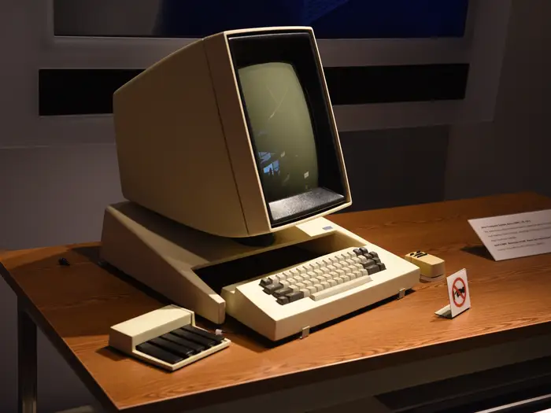

Evolution of Computers
The 1930s marked the beginning of calculating machines, which were considered the first programmable computers.
In the 1940s, computers took up entire rooms, like the ENIAC, which was once called a "mathematical robot."
In the 1950s, computers were strictly used for scientific and engineering research, like the JOHNNIAC, which was once described as a "helpful assistant" for mathematicians.
In the 1960s, everything changed when the Programma 101 became the first desktop computer sold to the average consumer.
As personal computers became popular in the 1970s, the Xerox Alto helped pave the way for Steve Jobs' Apple.

In the '80s, Apple's Macintosh was described as a game-changer for the computer industry.
As the '90s marked a period of self-expression, Apple released the famous iMac G3, which was customizable.
In the early 2000s, laptops became increasingly popular, especially after Apple launched its MacBook Air.
Today, computers come in all shapes and sizes, including tablets.
This page is created by Vishnu Arun